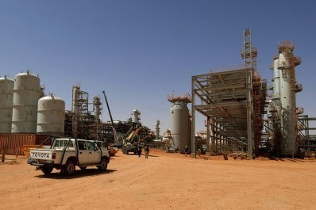

Новините Интернет новини - 13.07.2010 г. Проливни дъждове в Дания, Китай и Индия, необичайни горещини в Иран Над 200 хектара горят на територията на бивш военен полигон  23-ма ранени при сблъсък на два пътнически влака Спорт Българинът се активизира през втората част Браво на ръководството на Байерн, браво на Хосеп Гуардиола. Димитър Бербатов бе част от силно апатичния и ялов тим ЦСКА и Стойчо продължават да се самозаблуждават Емисии Над 200 хектара горят на територията на бивш военен полигон Проливни дъждове в Дания, Китай и Индия, необичайни горещини в Иран Интернет новини - 13.07.2010 г. 23-ма ранени при сблъсък на два пътнически влака Любопитно Браво на ръководството на Байерн, браво на Хосеп Гуардиола. Димитър Бербатов бе част от силно апатичния и ялов тим Проливни дъждове в Дания, Китай и Индия, необичайни горещини 23-ма ранени при сблъсък на два пътнически влака